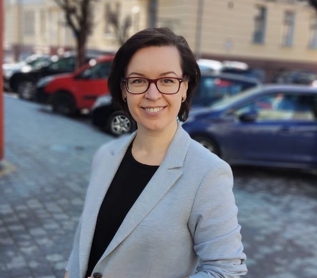

Hello, my name is Kateryna Havrylova and on this page I will tell about myself
I'm a happy woman because I have the best family, a good job (I love what I do), and the opportunity to learn and grow. My colleagues say that I am self-motivated, disciplined, able to work both independently and in a team, have critical thinking and am not afraid to take responsibility. About myself, I can say that I like to overcome difficulties, I enjoy solving complex problems, I am attentive, observant, have systemic and logical thinking, time management and self-organization skills, can analyze information, and I am attentive to details. I can easily find a common language with people of different professions and ages.
Unfortunately, February 2022 changed every Ukrainian, and I am no exception. When the war started, I had to leave my home and husband in the city of Sumy and move with my children to Kolomyia.
But life does not stand still, the children are getting used to the new school, we have new friends, and we are integrating into the new city. We try to use every opportunity to get to know the beauty of Ukraine, so I often travel with my children to different places in Western Ukraine.
And sometimes I even find time to do something for my soul, not just for work.